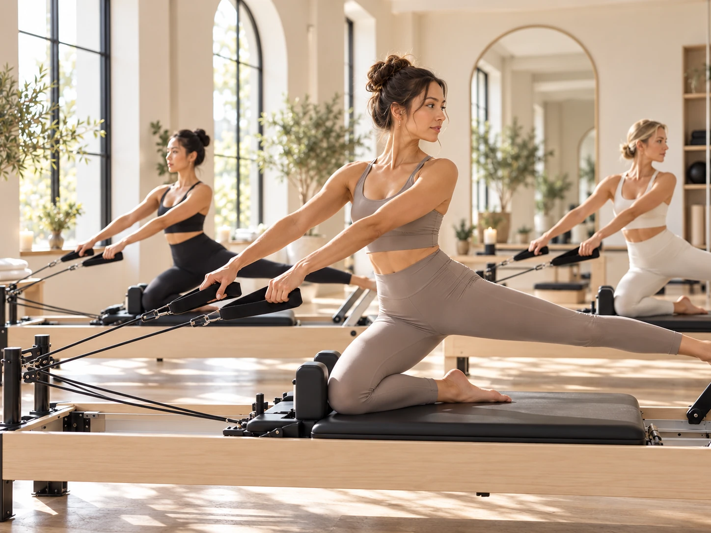
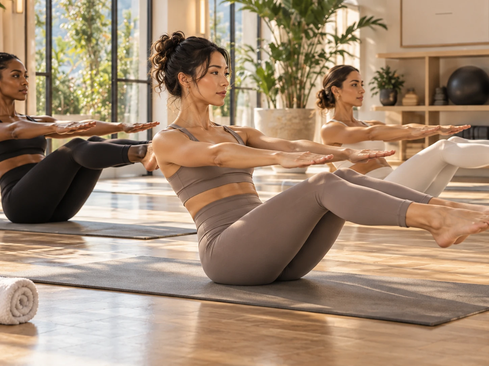

Stop treating every workout like a test
If every session has to be harder, faster, heavier, or more impressive than the last one, movement starts feeling like a performance review. Give yourself sessions where the goal is simply to move and leave in a better mood.
Progress can still happen without turning every workout into a challenge.
Choose something with a little personality
A Pilates class with music you like, a dance class, boxing, a scenic walk, pickleball, swimming, or a hike may give you more energy than another anonymous hour on a treadmill.
The best exercise is not just the one that looks efficient on paper. It is the one you will actually keep doing.

Change the environment
A new studio, outdoor trail, hotel gym, beach walk, or different neighborhood can make familiar movement feel fresh. Environment matters because your brain notices context, not just the exercise list.
Even moving your workout to a different time of day can change how it feels.
Make one part of the week social
Train with a friend, take a class together, or make a walk the thing you do while you catch up. Social connection can make movement feel less like a task and more like part of your life.
You do not need every workout to be social, but one shared session can change the rhythm of the week.
Let fun be a legitimate reason
You do not need a dramatic body goal to justify exercise. Feeling strong, sleeping better, having more energy, learning a skill, or simply enjoying the class are all valid reasons to move.
When the reason feels personal, consistency tends to feel less forced.